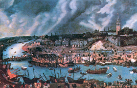

Lezione 13  Imperi Coloniali
Imperi Coloniali

«Nel corso del Cinquecento le colonie riversarono sulla Spagna più di 16.000 tonnellate di argento. Nel secolo successivo oltre 26.000 tonnellate e nel XVIII secolo oltre 39.000 tonnellate. L’effetto di questa marea di argento che invase prima la Spagna e poi un paese dopo l’altro fu straordinario. La eccezionale liquidità creatasi sul mercato internazionale favorì uno sviluppo imponente del commercio intercontinentale. […] Nei primi tempi dell’avventura coloniale spagnuola nel Nuovo Mondo, l’oro di cui si impadronirono i conquistadores fu esclusivamente prodotto di ruberie, bottini, saccheggi. Il guaio d’ogni attività parassitica è che non può durare all’infinito. Presto o tardi, a seconda della consistenza dei tesori accumulati dalle vittime e dell’efficienza dei predatori, le vittime sono spogliate di tutti i loro beni e per i ladroni non resta più nulla da fare. Questo fatale destino sarebbe accaduto anche agli spagnuoli se per un colpo di straordinaria fortuna non fossero stati scoperti, nei territori da loro conquistati, eccezionali giacimenti, auriferi e, specialmente, argentiferi. Con tutto quell’argento d’attorno a facile portata di mano, fu naturale che gli spagnuoli si buttassero, con tutta la loro passione ed il loro entusiasmo per l’oro e l’argento, nell’attività mineraria. Ebbe così inizio la saga dell’argento spagnuolo, di tesori ottenuti grazie ad un’intensa attività mineraria, e poi trasportati in patria sfidando nemici, corsari e la furia degli elementi. […] La categoria dominante che figura tra le importazioni in Spagna era quella definita il “tesoro”, composto da oro, argento e perle. […] La Corona spagnuola però aveva la pessima abitudine di essere perennemente indebitata. I tesori che arrivavano in Spagna pertinenti alla Corona erano normalmente spesi prima ancora di giungere a destinazione, e siccome l’indebitamento era soprattutto dovuto al mantenimento degli eserciti sui vari fronti, i tesori che la Corona spagnuola sborsava per pagare i suoi debiti uscivano di Spagna per riemergere nelle zone di guerra». (Carlo M. Cipolla, Conquistadores, pirati, mercatanti. La saga dell’argento spagnuolo, Il Mulino, Bologna,1996). Le vicende dell’oro e dell’argento giunti in Spagna e in Europa dalle Americhe sono narrate dallo storico Carlo Cipolla. I metalli preziosi resero la Spagna una delle potenze maggiori al mondo: l’impero spagnolo del 1500 fu El imperio en el que nunca se pone el sol, l’impero dove non tramonta mai il sole. La Spagna di Carlo V e di Filippo II visse principalmente delle ricchezze che arrivavano d'oltreoceano. Non si preoccupò di produrre ricchezza, né di sviluppare l’economia interna. Comprava tutto dall’estero, esattamente come le sue colonie, che paradossalmente importavano dagli inglesi e dagli olandesi il 90% dei beni di consumo. Finì così con l’indebitarsi per acquistare i beni di consumo e per sostenere enormi spese militari. Fu l’inizio del suo declino.